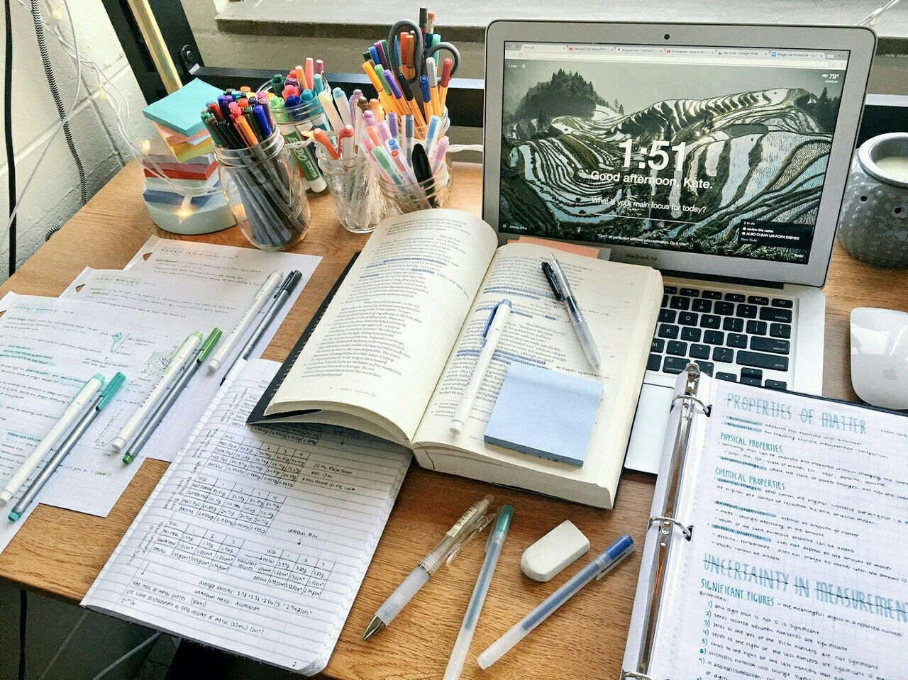
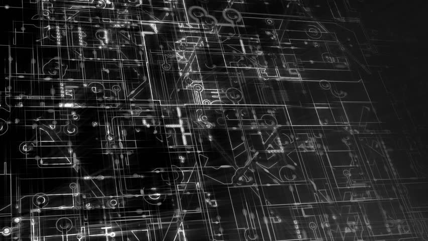
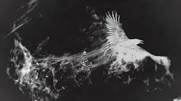

Academic Syllabus
This page contains the list of main subjects that are included in my Academic Syllabus.

Following is the list of main subjects of my B. Tech. Academic Course.
- Analog Electronics
- Digital Electronics
- Analog Communication
- Digital Communication
- Data Structures
- Computer Architecture
- Neural Networks and Fuzzy Logics
- Control System
- Digital Signal Processing
- Digital Image Processing
Following is the link to the PDF file that includes all information about my B. Tech. course syllabus and the topics that I have
completed during my whole Degree.
Note: Link to the Results PDF / transcript will be uploaded soon.
Following is the list of main subjects of my M. Tech. Academic Course.
- Information Theory & Coding
- MEMS & Sensor Design
- CAD of VLSI
Note: Remaining topics and the link to syllabus will be uploaded soon.
Note: Link to the Results PDF / transcript will be uploaded soon.
Research Projects
This page contains the list of Research Projects that I am contributing to and also some new
possible research projects.

Following is the list of research projects that I have completed.
Following is the list of research projects that I am working on currently.
Following is the list of new possible research projects.
Technical Activities
This page contains the list of Technical Activities that i have been part of during my Academic years.

Following is the list of Technical activities that i have been part of.
- Joint Technical Secretary - ISTE NITH
ISTE NITH is Indian Society for Technical Education, NIT Hamirpur. I have been a part of this society of my college from 2nd year of my college.
Currently I am at the position of Joint Technical Secretary for this Society. I with my team have organised and participated in
various technical events. Not only this but we have also made many technical projects. The link to our website is given below, you
can learn more about our society and our work there.
ISTE NITH
- Member(Final Year) - VIBHAV
VIBHAV is a Technical Club of our Department that participates in various technical events and we make various projects there.
I have been the part of this club since my 1st year and held the position of Executive Member and Coordinator in this team. I and my team have made various
technical projects. to learn more about our team and work you can visit our website. Link is provided below.
VIBHAV
Cultural Activities
This page contains the list of Cultural and Non-Technical Activities that I have been part of during my Academic years.

Following is the list of Cultural activities that I have been part of.
- Coordinator - Organization Club NITH
Organization is Cultural Club of our Institution. It's main task is to organize the Instutional Cultural and Technical events. We mainly deal with Hospatility, Accomdation and Logistics.
I have bee a part of this club since my 2nd year and worked as the Coordinator of the team in my 3rd year. Following is the Instagram page of our club.
Organization
- Member - Rhythmeecz
Rhythmeecz is the dance club of out Institution. I have been a part of this club in my 1st year and during my time there I have participated in various events with my team. Following is the link to the Instagram page
of our club.
Rhythmeecz